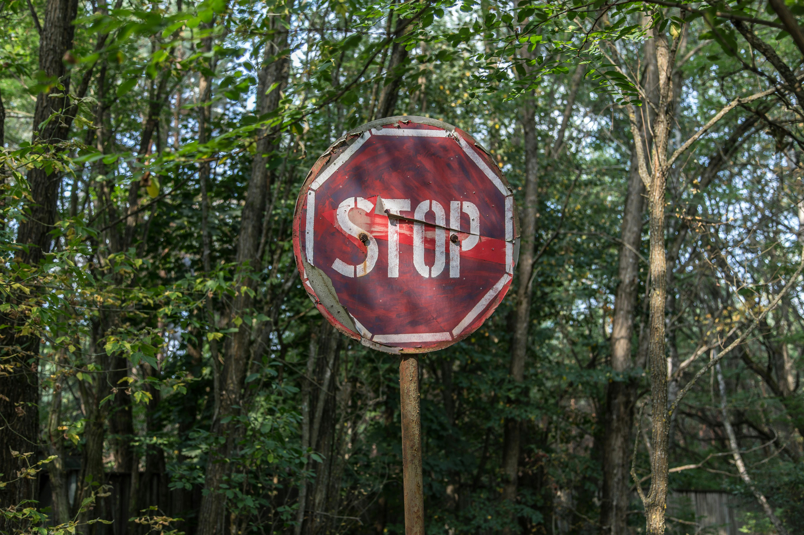

Make A Change Today

Red and White Road Sinage Pexels.
Images:
1. Jacober, W. (2016, September 6). Red and White Stop Road Sinage. Pexels. https://www.pexels.com/photo/red-and-white-stop-road-signage-1411397/
2. Mazumder, A. (2018, May 6). Person Holding A Green Plant. Pexles. https://www.pexels.com/photo/person-holding-a-green-plant-1072824/
2. Rie, P. (2018, July 25). Bird’s Eye View of Lumbers. Pexels. https://www.pexels.com/photo/bird-s-eye-view-of-lumbers-1268068/